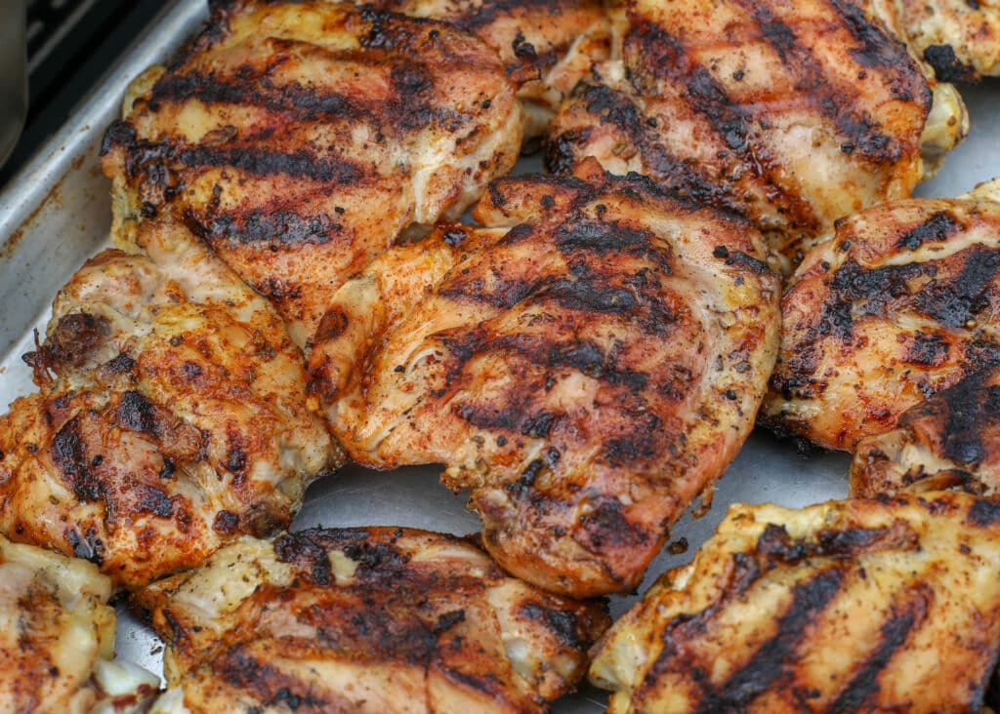

Lemon Pepper Chicken Thighs

A quick, easy, healthy chicken thigh recipe that's great for dinner
or meal prep. The shopping list is as follows:
- Chicken thighs, whatever amount you'd like
- Lemon Pepper seasoning
- Cayenne Pepper
- Garlic Salt
That's it! Simple and tasty. To prepare:
- Start by trimming the excess fat off the thighs, and place
onto a plate.
- Season the thighs heavily with lemon pepper seasoning, making
sure to cover all sides.
- Season the thighs with cayenne to taste
- The lemon pepper seasoning already includes garlic, and salt,
but add garlic salt to taste if you'd like some more.
- Grill on high heat for six minutes per side. Double check that
it's finshed with a meat thermometer
These thighs can be served as a main dish, or in meal prep containers.
Enjoy!
Return to Home